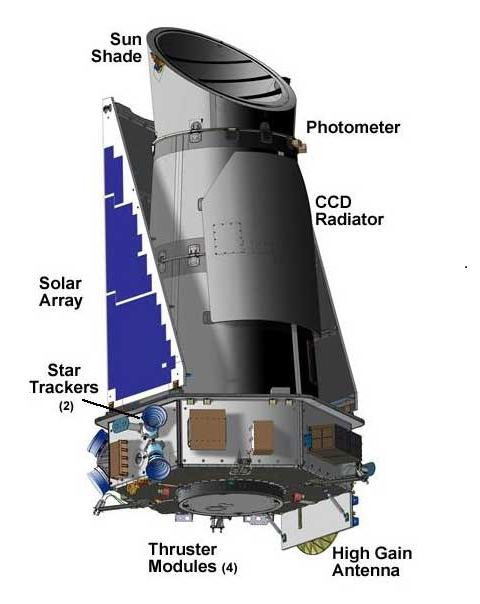

Hubble hookup, Kepler activation part of busy week for NASA
Earlier today, NASA scientist William Borucki said, "now the fun begins." The fact that he wasn't talking about the successful docking of the Hubble Space Telescope with the space shuttle should tell you everything you need to know about the week the US space program is having. The Hubble may get the lion's share of the press, but NASA operates a suite of fantastically successful observatories, and several of them passed major milestones this week.
Just after 1pm US Eastern Time Wednesday, the shuttle crew successfully latched on to the Hubble using the craft's robotic arm. Shortly thereafter, the device was locked into place in the shuttle's equipment bay, and the robotic arm's cameras were put to use in performing a visual inspection of the exterior of the craft. NASA is broadcasting a lot of the festivities live on its TV station—if it doesn't appear on your local provider's list of channels, you can watch a streaming feed.
A lot of the more exciting action will start in two days, when the first of five spacewalks are planned. Some of the basic housekeeping hardware, like the gyroscopes that enable precision pointing, will be replaced, and a fresh backup of the data transmission hardware that failed last year will be installed. But the big events happen later in the mission, when entirely new imaging and spectroscopy hardware will be installed. Some of these units aren't operating properly and, in any case, technology has advanced since the previous servicing mission, so the new equipment should provide some significant improvements to the scope's capabilities.
Elsewhere in orbit, another of NASA's observatories has run out of gas, and it won't be seeing a service mission to give it a refill. It's not all bad news for the Spitzer Space Telescope, which sees the universe at infrared wavelengths, though. In order to keep the heat from its own equipment from interfering with these observations, Spitzer carried a supply of liquid helium to cool things down. It carried a minimum of under three years of coolant, but careful management has stretched that out to over five; current readings show the last of it will run out any day now.
That doesn't mean the Spitzer will go blind, however; its instruments will still hover around 30°C above absolute zero, which will allow it to continue imaging on a subset of its initial wavelengths. Spitzer's been at the center of more discoveries than it's convenient to list, since redshifting pushes many distant objects into the infrared region. In our galactic neighborhood, interesting things—such as planets—often hide in dust that blocks out visible wavelengths, but allow infrared to pass unhindered.
Speaking of planets, a brand new observatory went into operation today: the Kepler, which was the subject of the quote from its principle investigator that we started the article with. The Kepler is essentially one big, wide-field camera that's sensitive enough to detect the dimming caused by the transit of planets in front of their host star. To maximize the chances of picking one of these up multiple times, it will spend several years pointed down the arm of the galaxy that contains Earth. Announcements regarding gas giants with short orbital periods may start as early as next year.
Launched in March, the Kepler has been moving away from Earth at about a kilometer a second as researchers calibrated its instruments, identifying sources of noise and getting a baseline for future results. With that out of the way, it's ready to go. We probably won't be hearing much from it in the near term—scientists will want to view multiple transits before concluding that something with a regular orbit is the cause—but the months of silence are likely to be followed by a deluge of results.
Taken from Hubble hookup, Kepler activation part of busy week for NASA - Ars Technica